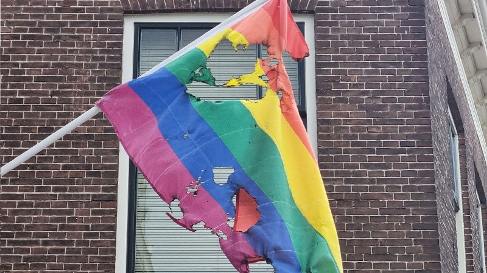
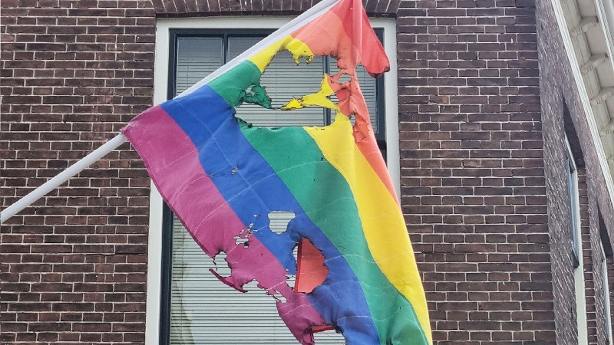

Wat is de LGBTIQA+ gemeenschap?
LGBTIQA+ is een afkorting voor Lesbisch, Gay (homoseksueel in het Nederlands), Biseksueel, Transgender, Intersekse, Queer en Aseksueel. De + staat voor al de andere groepen die niet vallen onder de grootste groepen en niet 'man', 'vrouw', heteroseksueel of cisgender.
-bron: Nederlandse Jeugdinstituut


Discriminatie en geweld tegen de LGBTIQA+ gemeenschap en een paar voorbeelden
 

Er is best wat discriminatie en geweld tegen de LGBTIQA+ gemeenschap. Dit is een best groot probleem. Er is wel wat bestrijding tegen discriminatie en geweld waar u hier meer informatie erover kan zien, maar het is nog steeds niet genoeg.
Er wordt ook op straat gediscrimineerd. Als u iemand van de LGBTIQA+ gemeenschap vraagt of ze ooit gediscimineerd zijn, dan hoor u bijna altijd wel dat diegene vreemd aangekeken werd of een vreemde reactie kreeg wanneer diegene bijvoorbeeld hand in hand liepen met hetzelfde geslacht of wanneer diegene vertelde dat diegene deel is van de LGBTIQA+ gemeenschap.
Mensen discrimineren vaak de LGBTIQA+ gemeenschap omdat ze bang zijn voor verandering of omdat hun geloof het niet toestaat, maar het blijven nog steeds mensen net als iedereen. U zou het waarschijnlijk ook niet leuk vinden als u vreemd aangekeken wordt of een rare reactie krijgt als u zegt dat u heteroseksueel bent, niemand vindt dat fijn.
U ziet wel vaker in het nieuws verhalen zoals eieren gegooid op huizen met pride vlag of verbranding van Pride vlag en er zijn veel meer nieuwsartikelen over discriminatie en geweld tegen de LGBTIQA+ gemeenschap zoals:
Protest en bestrijding
Er is al wel wat protest en bestrijding tegen discriminatie maar nog niet genoeg. Er zijn meerdere protesten als Het GSA netwerk, GSA staat voor Gender and Sexuality Alliance, demonstraties als deze en het C.O.C. (het Cultuur- en Ontspannings Centrum) die helpen tegen discriminatie en geweld tegen de LGBTIQA+ gemeendschap.
De overheid helpt ook tegen discriminatie zoals in dit artikel dat gaat over bestrijding van de discriminatie en geweld tegen de LGBTIQA+ gemeenschap, dit artikel dat gaat over de acceptatie van de LGBTIQA+ gemeenschap en dit artikel dat gaat over gelijke rechten van de LGBTIQA+ gemeenschap.
Ondanks de bestrijding en protest dat er al is is het nog niet genoeg want er bestaat nog steeds discriminatie. Om echt effectifiteit te krijgen met deze maatregelen moet iedereen meehelpen, dus als u zou willen meehelpen met bijvoorbeeld, het accepteren van de LGBTIQA+ gemeenschap tot het protesteren tegen discriminatie, dat zou heel erg op prijs gesteld worden en helpen met het probleem.


Politieke partijen

De overheid helpt al wel een beetje wat u hier kunt zien, maar om echt effect te krijgen moet iedereen helpen tegen discriminatie. Hieronder latenwijeen aantal LGBTIQA+ positieve en een aantal LGBTIQA+ negatieve politieke partijen zien.
LGBTIQA+ positieven politieke partijen:
LGBTIQA+ negatieve politieke partijen:
Een aantal LGBTIQA+ negatieve politieke partijen zijn±:
Deze lijst is opgemaakt uit de bronnen stemgedrag van rainbowvote en de BNNVARA
Andere leuke en interesante websites
De volgende links zijn een paar leuke of interessante links die u nog meer informatie zal geven over de LGBTIQA+ gemeenschap, de discriminatie van de LGBTIQA+ gemeenschap of de bestrijding van de discriminatie.